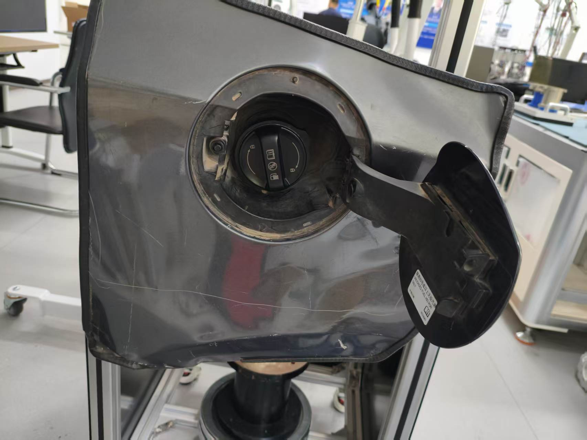
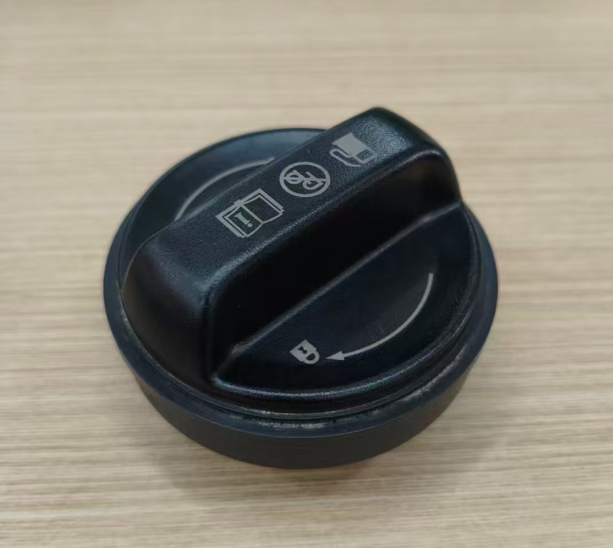
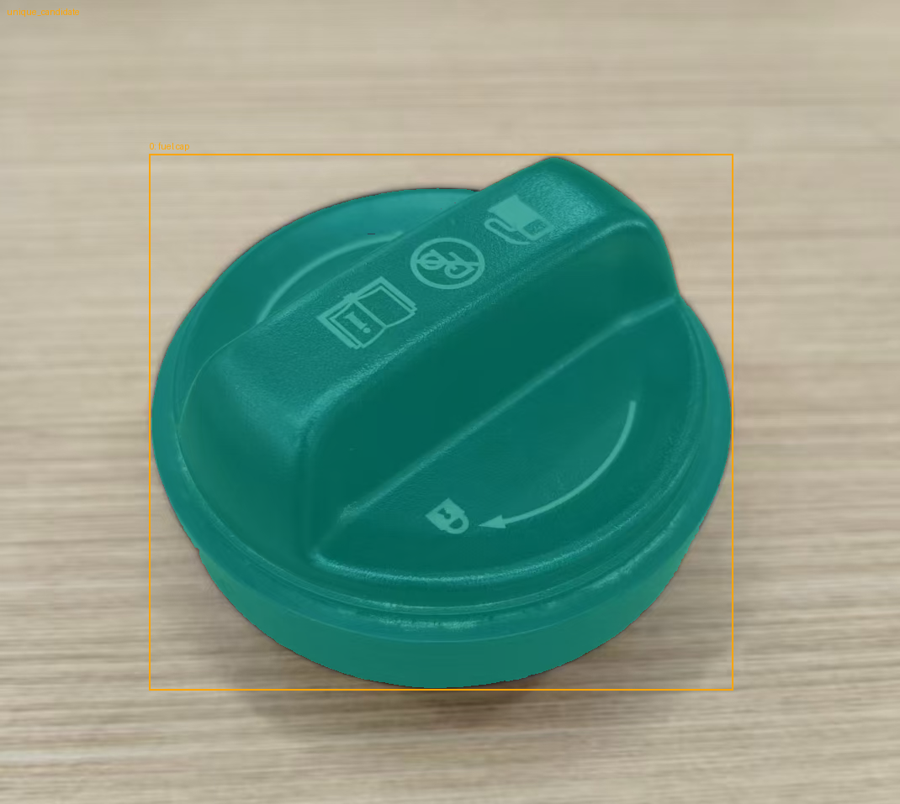
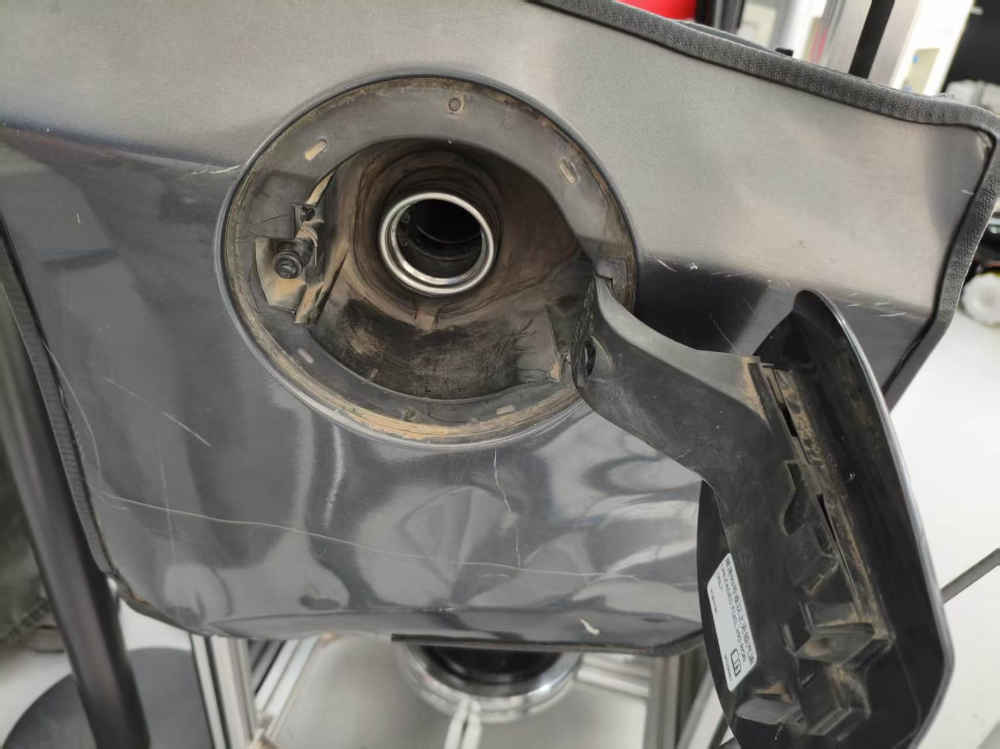
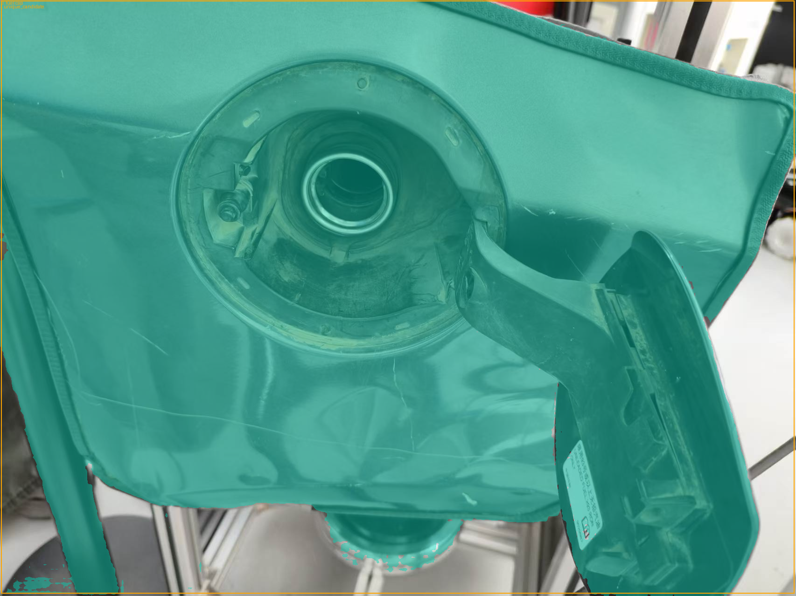
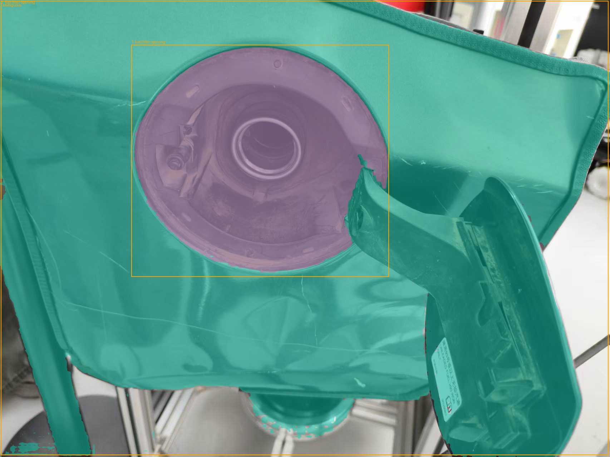
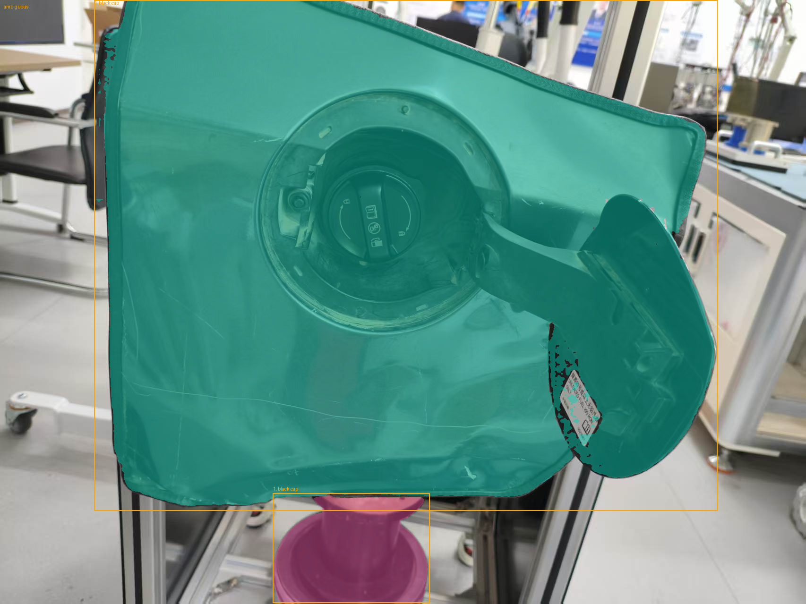
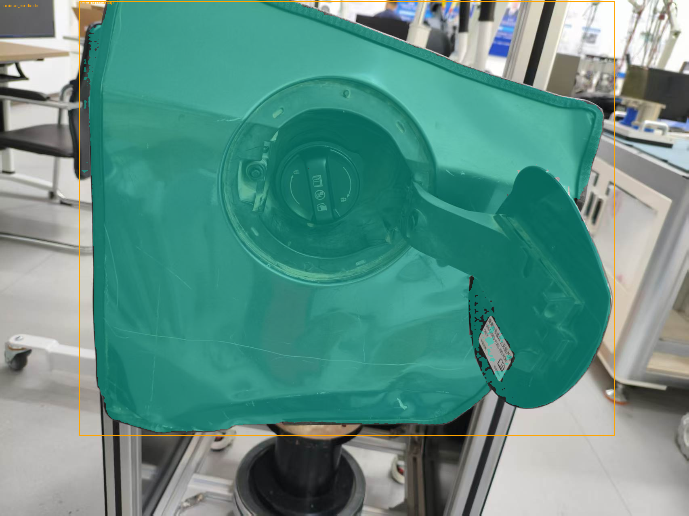

带盖安装场景：默认提示
提示：fuel cap.；软件状态：unique_candidate；候选数：1
独立读图：误检油箱面板和外门，没有定位中央盖体。



| 候选 | 模型标签 | 文本匹配 | SAM 质量 | 掩膜占图比例 |
|---|---|---|---|---|
| 0 | fuel cap | 0.475086 | 0.988741 | 53.53% |
当前 Grounding DINO + SAM 2：单独盖体照片有正向证据，实物安装场景未通过整盖定位。 六组均使用原始整图、固定模型及阈值，没有人工框、裁剪、训练或机器人动作。
橙框为检测框，彩色区域为模型掩膜。高匹配分数、高 SAM 质量和唯一候选均不保证目标语义正确。 以下独立读图意见不回写预测；没有人工像素标注或深度，不报告 IoU、三维位姿或稳定帧率。
提示：fuel cap.；软件状态：unique_candidate；候选数：1
独立读图：误检油箱面板和外门，没有定位中央盖体。

| 候选 | 模型标签 | 文本匹配 | SAM 质量 | 掩膜占图比例 |
|---|---|---|---|---|
| 0 | fuel cap | 0.475086 | 0.988741 | 53.53% |
提示：fuel cap.；软件状态：unique_candidate；候选数：1
独立读图：目视与整盖外轮廓一致；没有人工标注，不能报告 IoU。


| 候选 | 模型标签 | 文本匹配 | SAM 质量 | 掩膜占图比例 |
|---|---|---|---|---|
| 0 | fuel cap | 0.925553 | 0.990583 | 32.09% |
提示：fuel cap.；软件状态：unique_candidate；候选数：1
独立读图：盖体缺席，却误检大片油箱面板及周边结构。


| 候选 | 模型标签 | 文本匹配 | SAM 质量 | 掩膜占图比例 |
|---|---|---|---|---|
| 0 | fuel cap | 0.497462 | 0.932726 | 82.64% |
提示：fuel filler opening.；软件状态：ambiguous；候选数：2
独立读图：返回两个候选：大片面板及凹腔，未取得唯一精确中央加油口。

| 候选 | 模型标签 | 文本匹配 | SAM 质量 | 掩膜占图比例 |
|---|---|---|---|---|
| 0 | fuel filler opening | 0.560842 | 0.933214 | 82.64% |
| 1 | fuel filler opening | 0.352009 | 0.970287 | 15.14% |
提示：black cap.；软件状态：ambiguous；候选数：2
独立读图：歧义：误检面板及下方支撑部件，没有定位中央盖体。

| 候选 | 模型标签 | 文本匹配 | SAM 质量 | 掩膜占图比例 |
|---|---|---|---|---|
| 0 | black cap | 0.518687 | 0.988610 | 53.65% |
| 1 | black cap | 0.386468 | 0.978244 | 2.91% |
提示：round black cap with a handle.；软件状态：unique_candidate；候选数：1
独立读图：仍误检油箱面板，没有定位中央盖体。

| 候选 | 模型标签 | 文本匹配 | SAM 质量 | 掩膜占图比例 |
|---|---|---|---|---|
| 0 | round black cap | 0.531210 | 0.988562 | 53.70% |